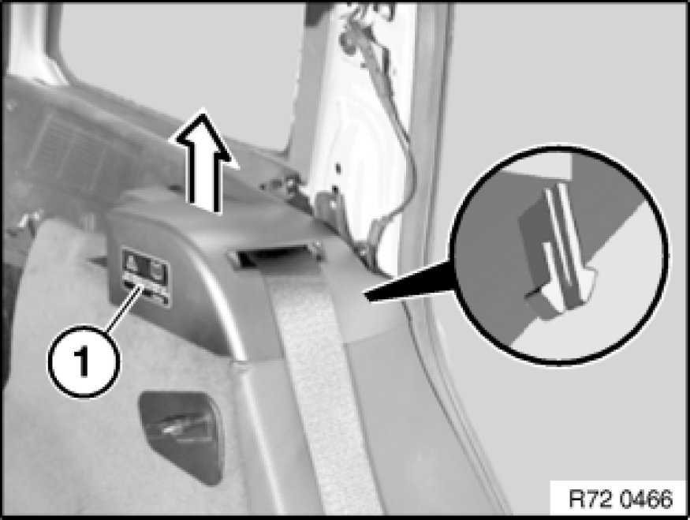

Removing and Installing/Replacing Rear Left or Right Seat Belts
72 11 100 - Removing and installing/replacing rear left or right seat belts

Necessary preliminary tasks:
- Remove rear seat Rear Seat, Through-Loading

Unclip automatic reel cover (1).
Installation:
If clips are faulty, replace automatic reel cover (1).
Release screws (1).
Lift out expansion rivet (2).
Installation:
If necessary, replace expander rivet (2).
Unscrew bolt (3).
Unclip cable (4).
Note:
If necessary, remove fabric adhesive tape.
Remove cover (5) for automatic belt reel.
Removing left and right seat belts:
Release screw from automatic reel on left and right.
Tightening torque 72 11 21AZ Specifications.
Remove automatic reels on left and right.
Installation:
Pay attention to coding.
Guide lug of automatic reels must be correctly seated in opening in body.
Release screws (1) on left and right.
Tightening torques 72 11 1AZ Specifications.
Remove reversing clip with seat belt (2) on left and right.
Release screws (1).
Tightening torque 72 11 1AZ Specifications.
Remove lower straps (2) and center upper strap (3).
Installation:
Belt buckles of lower straps must point to middle.
Fitting of belt buckle middle (1) or top strap middle (1) must be pushed onto tongue of belt buckle (2).